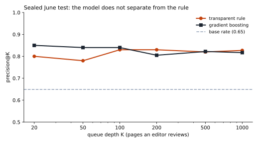
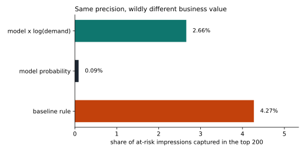
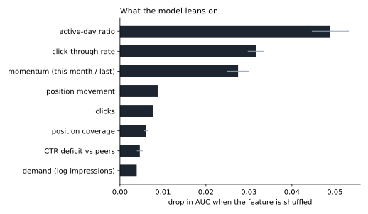
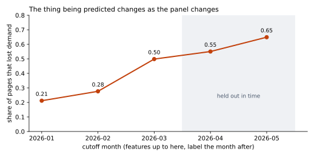

A small content team can review perhaps fifty pages a week, so the question is not which pages are declining but which to open first. I built a page-level ranking task on 1.3 million page-months of pseudonymised daily search performance, predicting whether a page's daily search demand falls more than 20% in the month after a cutoff date, with features drawn strictly from the months before it. A transparent rule and two learned models were compared on identical splits: five time-ordered cutoffs, grouped cross-validation by client, and a final sealed month never touched during development. On that sealed month the gradient-boosted model was indistinguishable from a two-line rule on ranking quality (AUC 0.593 against 0.591) and far worse on the metric an editor would actually feel, capturing 0.09% of at-risk impressions in its top 200 against the rule's 4.27%, because it filled the queue with pages averaging 186 monthly impressions instead of 28,658. The honest recommendation is to ship the rule, keep the model as a monitoring signal only, and treat the result as decision support for editor triage rather than evidence about how search engines behave.
A content editor at a small agency opens their queue on Monday morning. They have maybe six hours of review time and a library of tens of thousands of pages. The useful question is not "which pages are in decline" - on the slice I studied, roughly 65% of pages with real demand were losing ground in the test month, so a flag that answers that question lights up two-thirds of the library and helps nobody.
The useful question is ordering: which page do I open first? That makes this a ranking problem evaluated at a fixed queue depth, not a classification problem evaluated on accuracy. The output is a ranked list where each row carries a score, one reason code, and an action label, so that a person can read why a page is there and disagree with it.
The cost of being wrong runs in two directions. A false positive burns an editor's hour on a page that was fine, and may disturb a page that needed no help. A false negative leaves a page with real audience demand quietly bleeding traffic while nobody looks. Because capacity is the binding constraint, the expensive error is putting the wrong pages at the top, which is why every number in this paper is reported at a queue depth K rather than as an overall accuracy.
All work uses the pseudonymised FlyRank internship warehouse release (build v20260703), read directly from its hosted Parquet files with DuckDB. No raw export was downloaded, and nothing client-identifying appears anywhere in this project: clients and pages exist only as opaque hash identifiers, and no domains, URLs, or search queries are shown.
fact_content_daily_performance - the only source of every number in the
model. It carries a report_date, so I can prove when each value was true.dim_clients - history coverage, used to size the panel limitation.Three deliberate exclusions, each of which cost me something I wanted:
dim_content. I had planned to use "days
since last optimised" as a feature - it was the strongest single signal in my earlier
exploratory work. It is unusable. The column has 45,396 non-null values and the
earliest is 2026-04-24, after every cutoff I model. dim_content is a
current-state dimension describing pages as of the July 2026 export, with no history at all;
content_updated_date is future-dated on 382,739 rows for the same reason. The rule
I adopted: a dimension column is usable only if it cannot change after the page is created.fact_content_query_90d. Its fixed 90-day window overlaps the
label period, so its impression columns contain part of the answer.In the daily table, gsc_avg_position = 0 means "no position recorded", not rank
zero - 163,189 rows in a single month carry it while still reporting impressions. Averaging
position naively drags those pages toward zero, which places them in the best ranking band and
hands them the most generous peer benchmark. In my first pass this put pages at an impossible
"position 0.12" at the very top of the queue. Position is therefore computed only across days
that actually carry one.
One row is one page observed at one cutoff date. The label is measured, not defined by anyone's threshold column:
eligible : impressions in the cutoff month >= 50
label : y = 1 if mean daily impressions in the NEXT month
< 0.8 x mean daily impressions in the cutoff month
features : computed only from the cutoff month and the two before itImpressions are normalised per day rather than per month. Calendar months differ in length, and an unnormalised month-over-month ratio partly measures February being three days short rather than demand actually falling. The normalised and raw labels agree on 97.2% of rows, so this choice tightens the definition without driving the findings.
Eleven features, all from the dated fact table: demand level and its logarithm, 90-day demand, month-over-month momentum and the prior month's momentum, click-through rate, clicks, average position, position coverage, position movement, the share of days the page had any impressions, and click-through deficit against other pages in the same position band.
The comparison is a transparent rule frozen before any modelling began. It has two inputs and no fitted weights:
peer_ctr = aggregate click-through of all pages in this page's position band
ctr_deficit = (peer_ctr - page ctr) / peer_ctr, clipped to [0, 1]
score = ctr_deficit x log(1 + monthly impressions)The logarithm is deliberate. Raw demand is negatively associated with decline in this panel - the largest pages are the most stable - so multiplying by raw impressions makes the score mostly a volume ranking and degrades it. Damping demand keeps the queue commercially relevant without letting size dominate.
Three separate defences, because each catches something different:
Every claim below survived four probes:
Two results, and they point in different directions. Within the training period, under grouped cross-validation, the gradient-boosted model clearly beat the rule. On a sealed future month, it did not.
| Method | AUC | P@200 | Lift |
|---|---|---|---|
| Gradient boosting | 0.649 | 0.700 | 2.00× |
| Transparent rule | 0.578 | 0.625 | 1.79× |
| Logistic regression | 0.570 | 0.535 | 1.53× |
Base rate 0.350, n = 284,096. On this evidence alone I would have shipped the model.
| Queue | AUC | P@50 | P@200 | At-risk impressions caught | Median page size |
|---|---|---|---|---|---|
| Transparent rule | 0.591 | 0.780 | 0.830 | 4.27% | 28,658 |
| Gradient boosting | 0.593 | 0.840 | 0.805 | 0.09% | 186 |
| Model × log(demand) | - | 0.780 | 0.825 | 2.66% | 14,942 |
| Logistic regression | 0.595 | 0.560 | 0.670 | 5.70% | - |
Base rate 0.649, n = 133,719.
The finding. All three AUCs sit between 0.591 and 0.595 - on a sealed future month, the model and the two-line rule are statistically indistinguishable at ranking. The model edges the rule at the very top of the queue (P@50 of 0.840 against 0.780) and loses slightly deeper down. But the columns that decide this are the last two: the model's top 200 protects 0.09% of at-risk impressions where the rule protects 4.27%, roughly 47× less, because it fills the queue with pages that get about 186 impressions a month.
That is the whole result in one sentence: the model optimised the metric it was given, which counted pages, and pages are not equal. A queue of 200 near-invisible pages can score well on precision and protect almost no traffic. Multiplying the model's probability by log demand recovers most of the business value (2.66%) but then performs no better than the rule it was supposed to replace.



The model's leading signal is one the rule does not use: how many days of the month a page was visible at all. I tried to fold that discovery back into the rule and failed. Decline rate across active-day bands runs 20.3%, 44.8%, 30.2%, 39.1% - not monotone, so there is no threshold to write. Whatever the model is using, it is an interaction rather than a readable cut point. That is a negative result, and it is the honest reason the rule was not improved.
Predicted probabilities do not match observed rates on the sealed month. In the lowest decile the model predicted 0.146 and reality delivered 0.402; in the highest it predicted 0.639 against 0.733. It was trained on months where 35% of pages declined and tested on one where 65% did, and it never adjusted. Any deployment would need recalibration on recent data, and the ranking - not the probability - is the only output worth trusting.

What follows is what this work cannot say, written before a reader has to ask.
The strongest claim the evidence carries: on GSC-instrumented clients between November 2025 and June 2026, a two-input transparent rule ranked pages for editorial review about as accurately as a gradient-boosted model, and substantially better by protected traffic. That is a statement about a portfolio and a period, offered as decision support.
The rule matches the model's ranking quality on unseen future data, protects 47× more at-risk traffic, and an editor can read it in one line. It has no training pipeline, cannot drift silently, and needs no recalibration. Where two options perform the same, the one a person can argue with is the better product.
The model was not broken; it was pointed at the wrong target. Counting pages made a queue of 186-impression pages look excellent. Any future model should be selected on impression-weighted recall at K, so that being right about a page nobody visits counts for what it is worth.
Pages where most impressions carry no ranking position decline at 67.8% against 47.1% for fully-measured pages. They belong in the queue - filtering them lowers precision - but the reason code shown to the editor should say the position data is thin, not that the title is underperforming. A reason an editor cannot trust is worse than no reason.
These dominate the top of the rule's ranking and they are rarely a title problem. They look much more like pages ranking for queries that were never going to click. They need a query-mix diagnosis, not a rewrite, and sending an editor to "fix the title" on them is how a queue loses its audience.
The panel moved from 21% to 65% decline in five months. That drift is itself the most actionable signal in this project: it says something changed portfolio-wide, which no per-page queue will ever surface.
Everything is in the public repository. The weekly notebooks build to this result in order:
Seeds are fixed at 42 throughout. Row order is sorted explicitly after every
warehouse pull, because DuckDB scans partitions in parallel and does not guarantee ordering -
two identical pulls otherwise produced two different AUCs. Environment: Python 3.12, duckdb 1.5.5,
pandas 3.0.3, scikit-learn 1.9.0.
To re-run from a clean clone: request access to the dataset, authenticate with a read token,
then execute the capstone notebook top to bottom. The warehouse scan is roughly five minutes and
caches locally; every later step reads the cache. Metric receipts are committed as
work/outputs/capstone_metrics.json and
work/outputs/capstone_interpretation.json.
Built on the FlyRank ML Internship dataset - flyrank.ai. The warehouse release is real, pseudonymised search performance data, and the fact that it is real is what made the negative result in this paper worth reporting. Thanks to the FlyRank team for opening it up, and for a curriculum that put leakage hunting and honest validation ahead of scores.